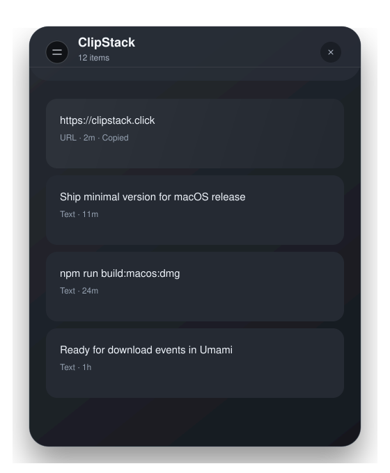

Made for the menu bar
Quick access, no noisy dashboard, and no onboarding maze.
Now available for macOS
Minimal. Native-feeling. Built for people who copy all day.
Latest stable: v- • Looking up latest release...

Quick access, no noisy dashboard, and no onboarding maze.
Tiny footprint, instant copy actions, and smooth keyboard flow.
Pick your Mac chip, download the DMG, drag to Applications.
Download the DMG, open it, drag ClipStack into Applications, then launch it.
Yes. This page automatically serves the latest builds for both chip types.
Yes, the full source code is available on GitHub under the MIT license.
Clipboard history is stored locally on your Mac. No cloud account is required.
Yes. Version and download links are read from the latest GitHub Release in real time.
I am Simon, a professional software engineer focused on AI products. I build small tools that make daily work easier, and I share the best ones as open-source apps.